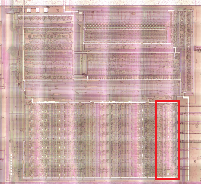
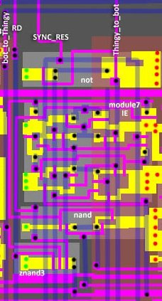
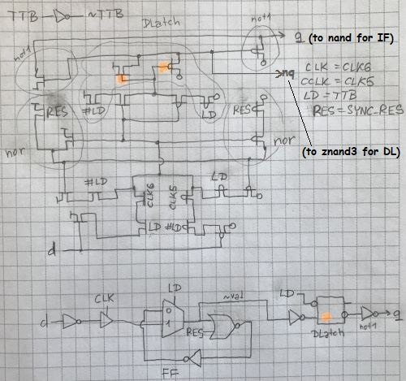
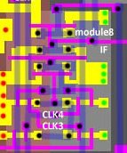
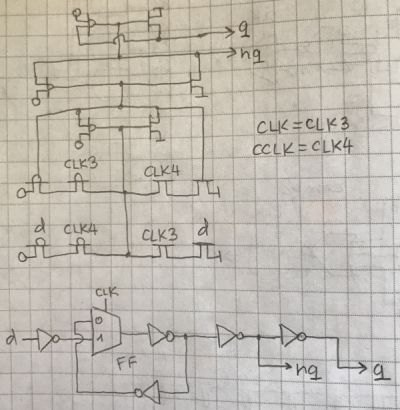
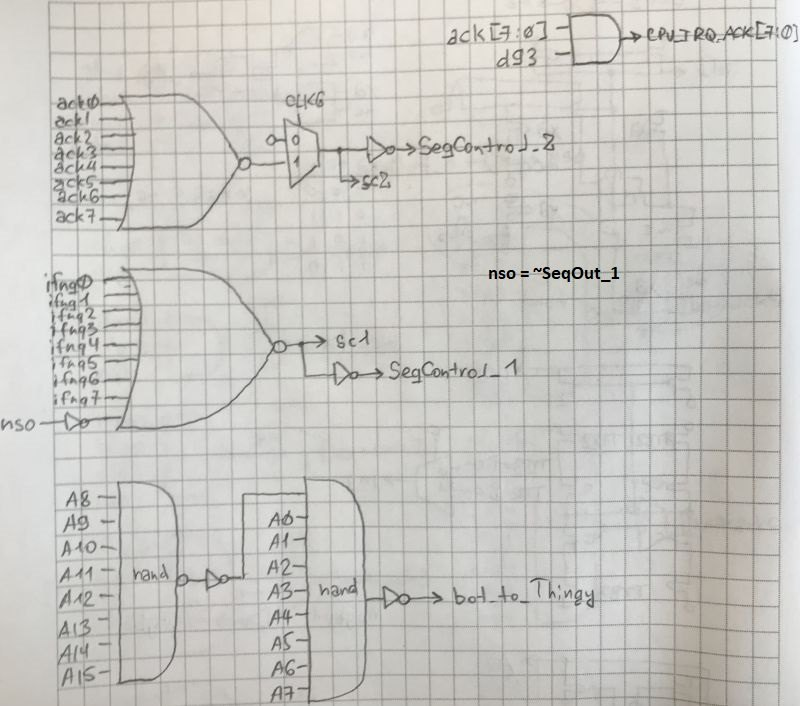
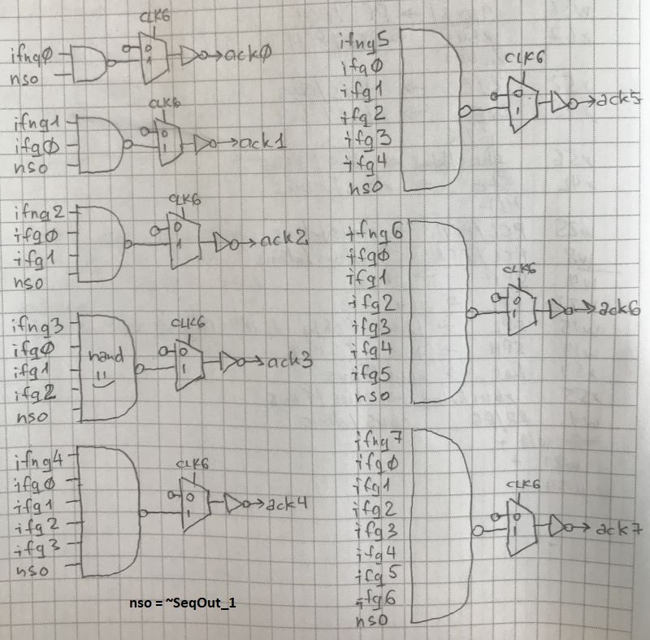
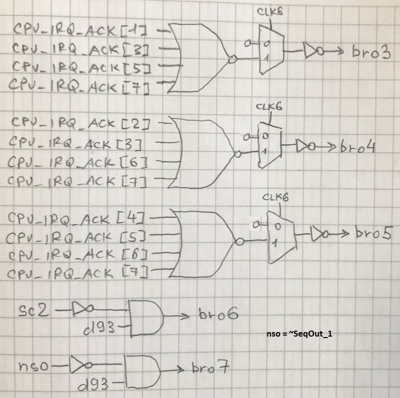

Bottom Right (IRQ) Logic

The IRQ logic consists of the following parts:
- IE
- IF
- Priority encoder
- "Breadcrumps"
IE


Latch (no CLK edge detection, yes ld edge detection) with reset.
IF
Program access ($FFFE) to the IF in the DMG CPU has been removed.


It is a regular (transparent) latch (no edge detection), to store the interrupt flag.
Breadcrumps
I never tire of repeating: dear chip designers - please do not spread the logic this way, because it is difficult to cut it into pieces and post pictures on the wiki. Therefore, I will not give pictures of the topology here - see the general big picture of the bottom part. Pieces of "Breadcrumped" circuits are marked with different colors.
- breadcrumped nor-9 (cyan): sc1 (Any interrupt)
- breadcrumped aoi (green): sc2 (Priority encoder)
- breadcrumped nand-9 (white): A0-A7 + AddrHi -> bot_to_Thingy (Addr = 0xffff)
- breadcrumped nand-8 (red): A8-A15 (AddrHi)
- breadcrumped nor-4 (x3): bro3, bro4, bro5 (Interrupt address)
Logic:

Priority encoder:

Interrupt address:
